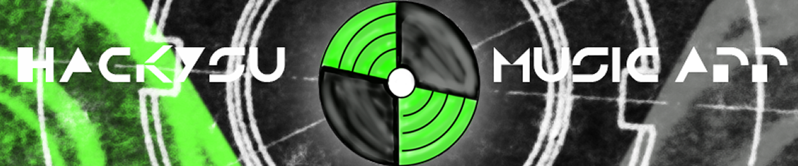

Welcome to HackYSU!
Here we are going to recommend you some music and help you recommend music to your friends
First, let's determine your current location!
Here are the last few songs that you have listened to and/or added to your playlist:
(insert data from Spotify API)
My Saved Tracks
This app demonstrates how to get the saved tracks for a user
- Today Was a Fairytale (Taylor Swift)
- You're Beautiful (James Blunt)
- Uptown Funk (Mark Ronson, Bruno Mars)
- Blank Space (Taylor Swift)
- Shake It off (Taylor Swift)
- I Bet My Life (Imagine Dragons)
- Bang Bang (Jessie J, Ariana Grande)
- Fancy (Iggy Azalea)
- Be OK (Ingrid Michaelson)
- Everlasting Love (Gloria Estefan)
In the meantime, why not check out these other Spotify tracks that your friends nearby have been listening to?
Suggestions
From DracoBiblio
:
- Who's on First (Abbott and Costello)
- I Hate Crime (Mr. Kent, Private Investiation)
- The Adventure of the Musgrave Ritual (Bart Wolffe)
- Greetings and Introductions, Pt. 1 (Bitesize Irish Gaelic)